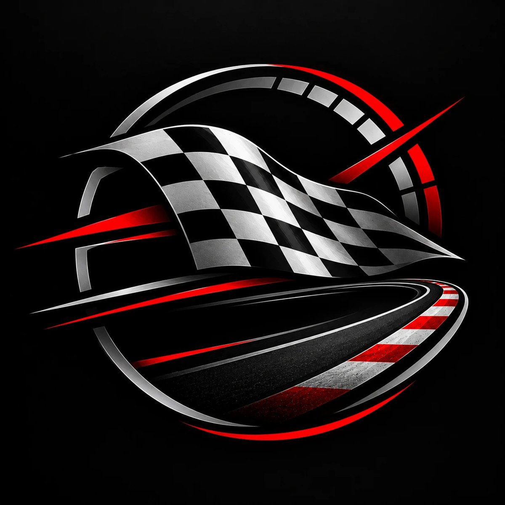

Brasília recebe a etapa de endurance

A 9ª etapa roda no Autódromo Nelson Piquet de 25 a 27 de setembro, em formato longo, junto com Stock Light, F4 e Turismo Nacional.

A 9ª etapa roda no Autódromo Nelson Piquet de 25 a 27 de setembro, em formato longo, junto com Stock Light, F4 e Turismo Nacional.